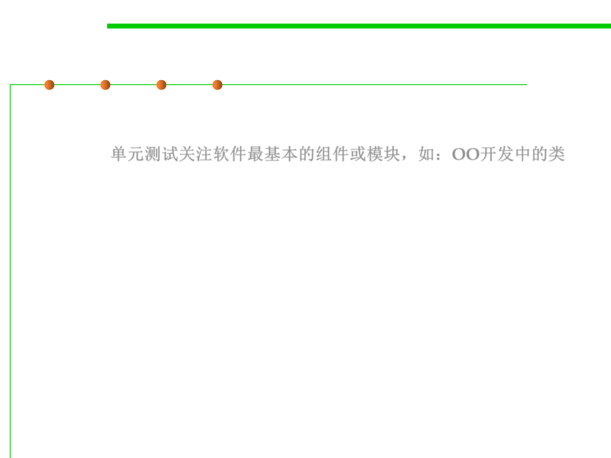

Unit Testing
7.5 Testing and Test-First Programming
▪ Unit testing focuses verification effort on the smallest unit of
software design—the software component or module (classes in
OOP ). 单元测试关注软件最基本的组件或模块，如：OO开发中的类
– Using the component-level design description as a guide, important control
paths are tested to uncover errors within the boundary of the module.
– Testing modules in isolation leads to much easier debugging. When a unit
test for a module fails, you can be more confident that the bug is found in
that module, rather than anywhere in the program. 易于定位错误位置
– The unit test focuses on the internal processing logic and data structures
within the boundaries of a component. 测试内部处理逻辑和数据结构